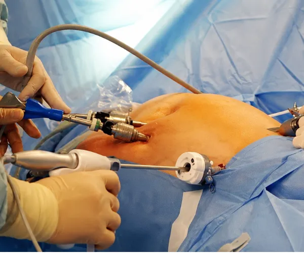

Bariatric Surgery
Laparoscopic Gastric Bypass, Sleeve Gastrectomy, and Duodenal Switch for sustainable, long-term weight loss with minimal invasive techniques.
Explore Procedure
Behind every brilliant performance there were countless hours of practice and preparation.
— Prof. (Dr.) Atul N.C. Peters
Prof. (Dr.) Atul N.C. Peters is Vice Chairman of the Dept. of Bariatric, Minimal Access & Robotic Surgery at Max Smart Super Speciality Hospital, Saket – New Delhi. With close to three decades of surgical experience, his practice is dedicated to advanced GI, minimal access and robotic surgery with special interest in Bariatric & Metabolic Surgery for diabetes, performing over 1,500 cases annually.
Dr. Peters is a DHA Certified, Specialist Bariatric and Robotic Surgeon at New Modern Hospital, Dubai and consultant Bariatric Surgeon at NMC, Muscat. He has been awarded as CENTRE OF EXCELLENCE for Bariatric and Metabolic Surgery by OSSI and CENTRE OF EXCELLENCE for Robotic and Innovative Surgery by ARIS. He is also a 'Proctor' in Robotic surgery providing real-time guidance to trainee surgeons.

Laparoscopic Gastric Bypass, Sleeve Gastrectomy, and Duodenal Switch for sustainable, long-term weight loss with minimal invasive techniques.
Explore ProcedureSurgical solutions for Type 2 diabetes remission through gastric bypass and metabolic procedures that reset insulin response naturally.
Explore ProcedureState-of-the-art da Vinci robotic system delivering precision surgeries with 4K vision, faster recovery times and minimal scarring.
Explore Procedure
Advanced laparoscopic hernia repair and gallbladder removal procedures with minimal scarring and same-day discharge options.
Explore ProcedureExpert correction of previous weight loss surgeries with proven techniques for optimal long-term outcomes and renewed results.
Explore ProcedureComplex gastrointestinal surgeries including colorectal and foregut procedures, performed with the latest minimally invasive techniques.
Explore ProcedureTrusted by 5,000+ patients from 50+ countries
Arabic, English, French, Russian, Hindi & Swahili coordinators
Fast-track medical visa with invitation letter
Complimentary luxury pickup & drop service
Partner 4★/5★ hotels with negotiated rates
Halal, kosher, vegan & cultural meal plans
Lifelong video consultations post return
Real people, real numbers, real second chances. Hear from those who chose Dr. Peters and walked away transformed.

"From 98kg to 56kg — Dr. Peters gave me a new lease on life. I can finally play with my grandchildren without feeling tired."

"My health issues are gone. I feel 20 years younger and have rejoined my hiking group after a decade."

"Best decision of my life. Dr. Peters made everything easy from consultation to recovery."

"From 4 medications to none. Amazing results — my cardiologist is genuinely impressed."

"International patient care was exceptional. The team handled everything — visa, hotel, follow-up. Highly recommend!"

"Dr. Peters is the best in India. My results speak for themselves — and I get my life back."
*Results may vary. Individual outcomes depend on health conditions, lifestyle and adherence to post-op guidance.
Check if you're a candidate for bariatric surgery
You may be a candidate for bariatric surgery.
Real stories from real patients who transformed their lives under Dr. Peters' care
 4:12
4:12
 5:48
5:48
 3:54
3:54
 4:27
4:27
Guided exercise videos designed to complement your weight-loss journey — build strength, stamina, and confidence with expert-led routines.
Expert advice on healthy living, post surgery care, weight loss, lifestyle modification etc
Type 2 diabetes has become one of the most common lifestyle diseases today, affecting millions of people worldwide.
Read ArticleSagging skin after significant weight loss is one of the most common concerns people face after undergoing bariatric surgery.
Read ArticleBariatric surgery is a powerful step toward achieving long-term weight loss and improving overall health.
Read ArticleTake the first step towards a healthier life. Choose how you'd like to connect — or fill in the form for a free consultation.
Real people, real answers — no automated bots. We respond within minutes during business hours.
Fill in your details and our team will contact you within 24 hours.